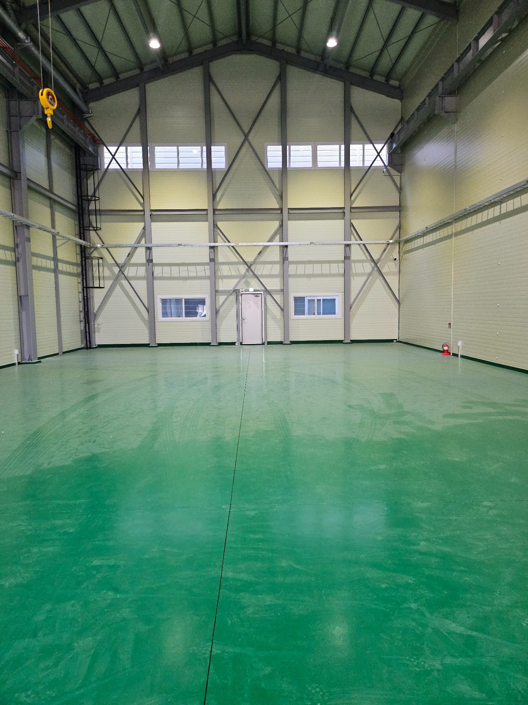
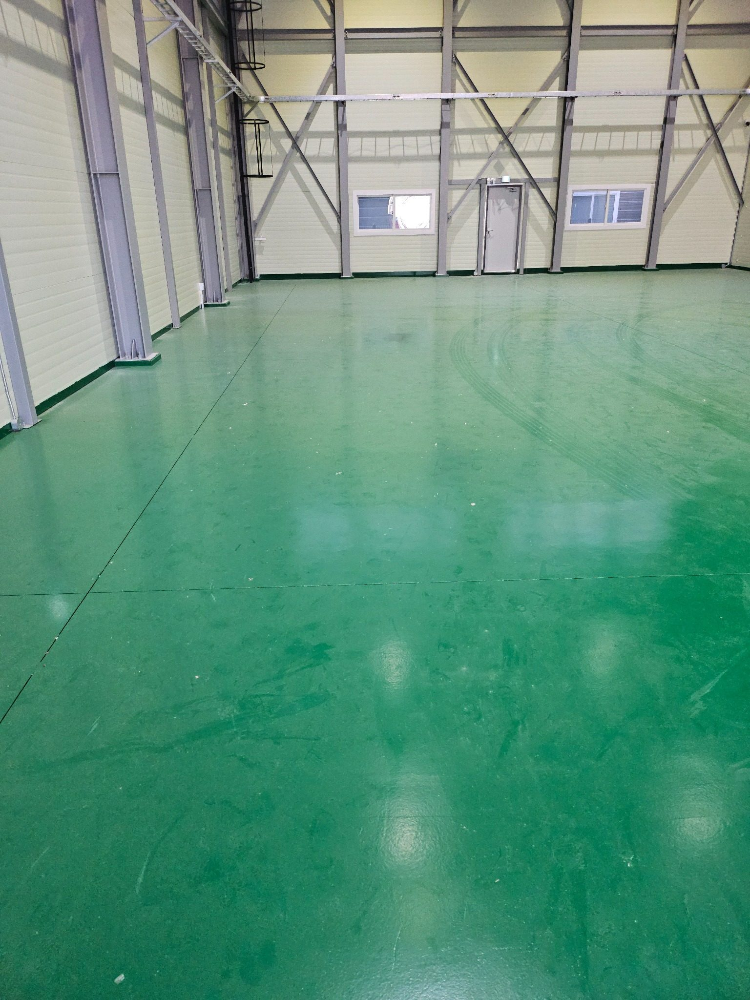
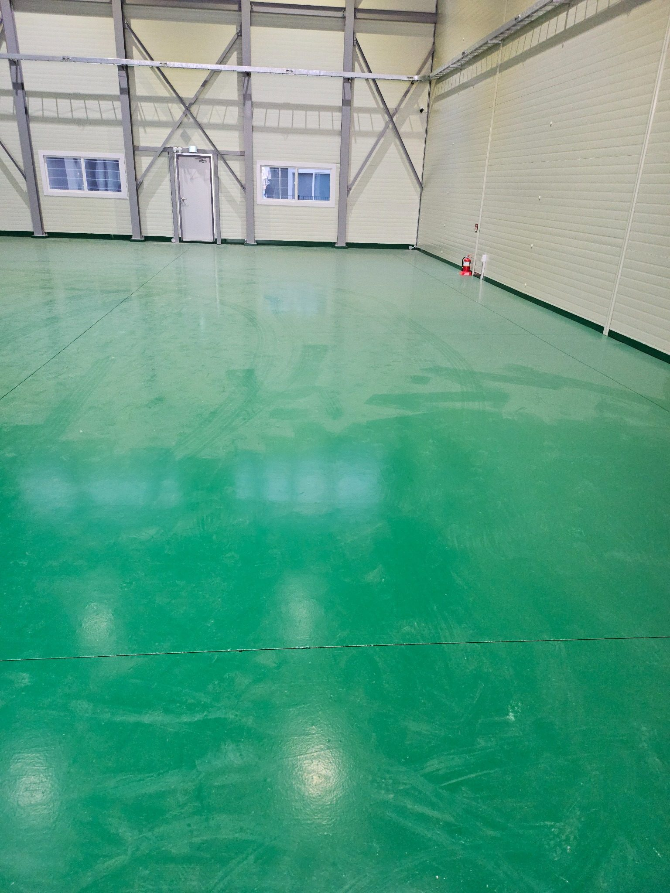
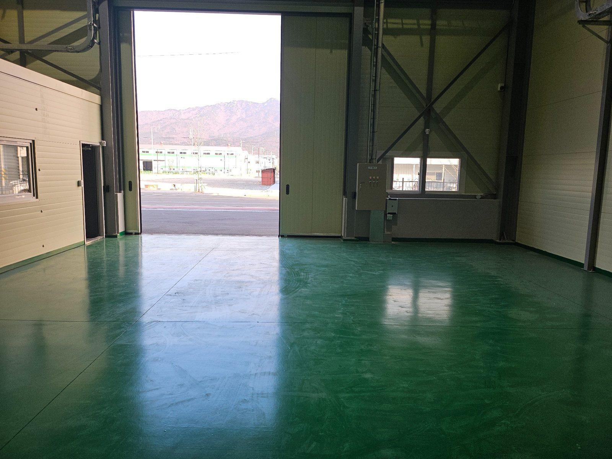
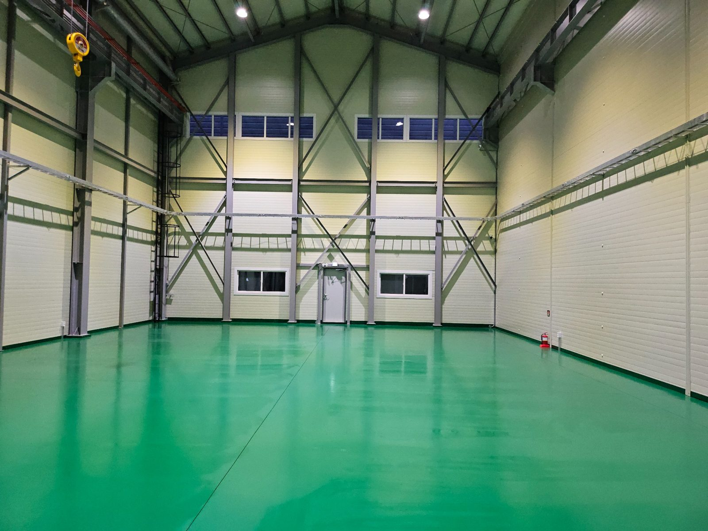
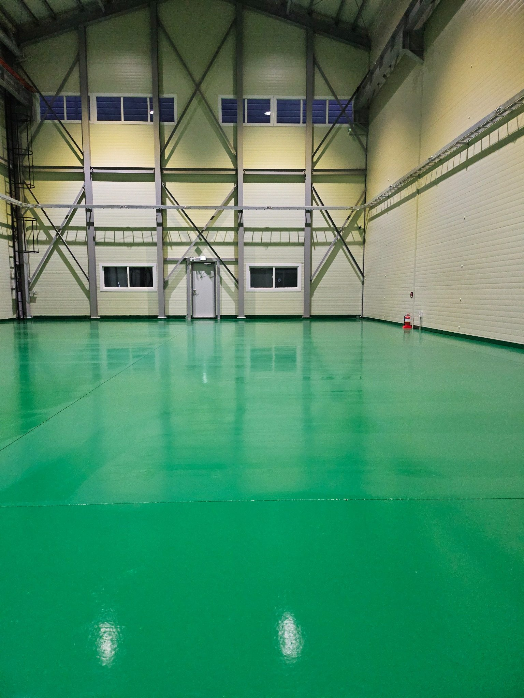
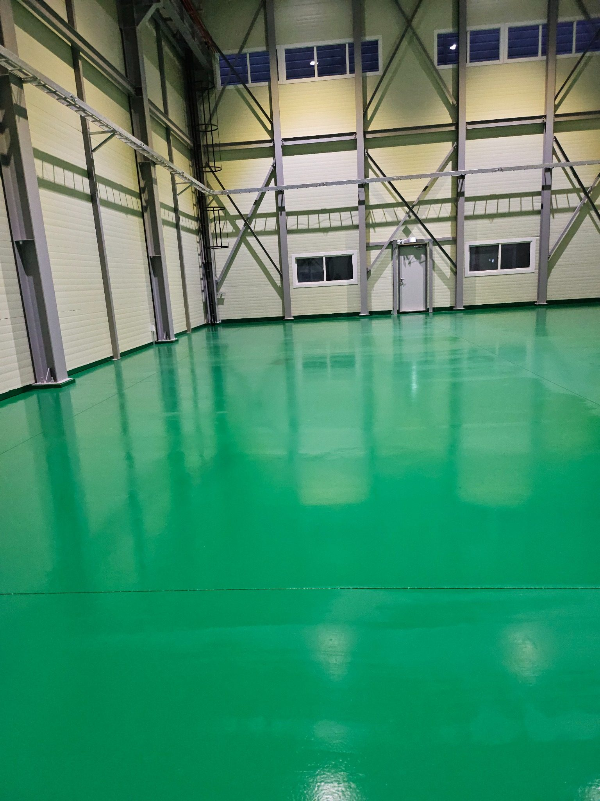
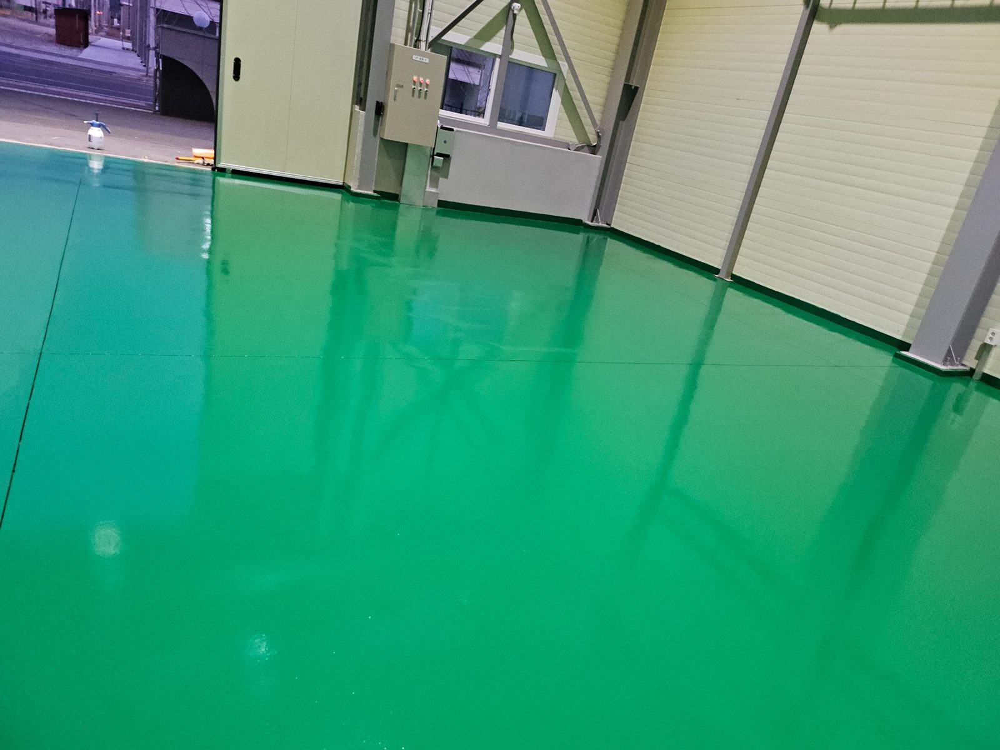
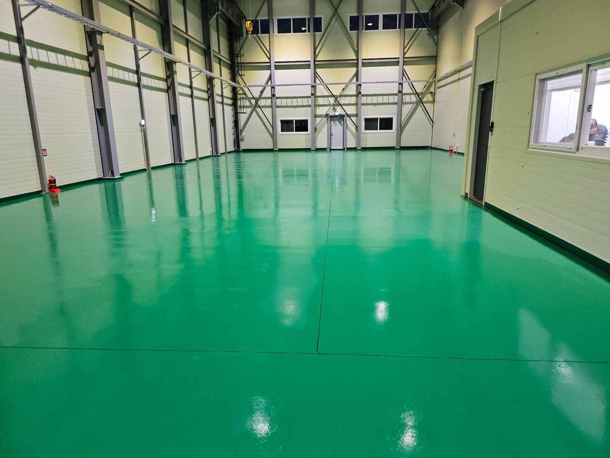
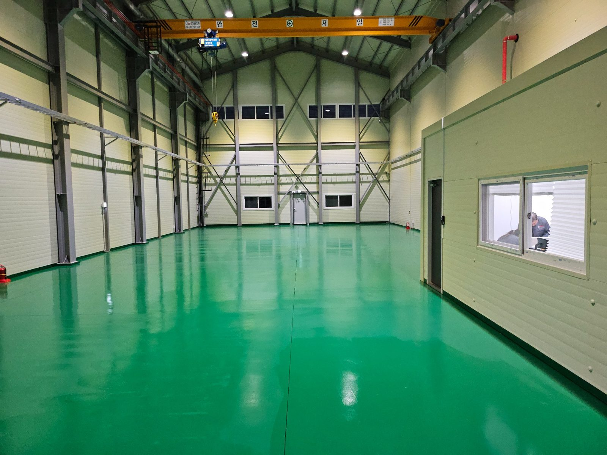

김해 공장 바닥청소 | 에폭시 바닥 오염 집중관리
넓은 공장 바닥은 사람과 장비 이동이 반복되면서 먼지, 타이어 자국, 작업 오염이 넓게 퍼지기 쉽습니다. 사진처럼 에폭시 바닥 전체를 구역별로 확인하고 가장자리와 출입구까지 연결해서 관리하면 공장 내부의 정돈 상태를 안정적으로 유지할 수 있습니다.
현장 면적, 바닥 재질, 지게차·장비 이동량, 분진과 유분 오염, 작업시간과 동선을 확인한 뒤 청소 범위를 정합니다.
주촌·대동·상동·진례·한림·생림 등 공장과 창고가 많은 지역을 중심으로 공장 바닥청소와 사업장 정기청소를 상담합니다.

공장 바닥 전체 상태 확인
공장 바닥은 넓은 면적만 보고 한 번에 진행하기보다 전체 상태를 먼저 확인한 뒤 오염이 많은 구역부터 나눠 관리하는 것이 효율적입니다.

넓은 에폭시 바닥 구역별 관리
에폭시 바닥은 밝은 조명 아래에서 오염 흔적이 넓게 보일 수 있어 구역을 나눠 바닥 전체를 일정하게 정리합니다.

벽면과 기둥 주변 가장자리 확인
벽면과 기둥 주변은 중앙부보다 청소 장비가 닿기 어려워 먼지와 잔여 오염이 남기 쉽습니다.

출입구 쪽 유입 오염 관리
차량이나 작업자가 드나드는 출입구는 외부 먼지와 미세 오염이 가장 많이 유입되는 구간입니다.

공장 중앙 작업 동선 정리
공장 중앙부는 장비와 작업자 이동이 반복되는 만큼 전체 동선을 기준으로 관리 순서를 잡습니다.

장비 이동 흔적과 바닥 얼룩 확인
타이어 자국과 작업 흔적은 바닥 재질을 확인한 뒤 무리한 손상 없이 정리하는 것이 중요합니다.

광택과 얼룩 상태 비교
청소 후에는 조명 반사와 바닥 표면을 함께 보면서 얼룩이 한쪽에 남지 않았는지 확인합니다.

출입문 인접 구간 마무리
출입문 주변과 코너는 바닥 전체 청소가 끝난 뒤 다시 확인해 잔여 먼지와 오염을 정리합니다.

전체 바닥 균일도 확인
넓은 공간은 부분적으로 깨끗해 보이더라도 전체 균일도가 중요해 시야를 넓혀 재점검합니다.

공장 내부 최종 점검
마지막으로 출입구에서 공장 안쪽까지 전체 바닥 상태를 확인하고 작업을 마무리합니다.
김해 청소 무료 방문견적
현장 규모, 이용 인원, 운영시간, 오염 정도와 관리 범위를 확인한 뒤 무료 방문견적으로 안내합니다. 정기청소는 현장 상황에 따라 주 1회부터 주 6회까지 상담 가능합니다.
무료 방문견적 요청010-7246-5626